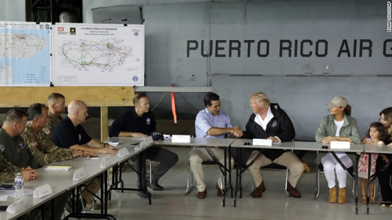

Trump doles out praise as Puerto Ricans despair.

San Juan, Puerto Rico (CNN)Nearly two weeks after Hurricane Maria pummeled the island of Puerto Rico, President Donald Trump touched down for the first time and immediately downplayed the devastation. "Every death is a horror," Trump began, before comparing Puerto Rico's official death toll of 16 to "a real catastrophe, like Katrina," in which more than 1,800 people perished from the 2005 storm that ravaged New Orleans. Just hours earlier, Puerto Rico Gov. Ricardo Rosselló warned reporters that he expected the death toll to climb. After Trump departed, he announced the death toll had risen to 34. Trump's post-storm visit checked all the boxes: He was briefed by local and federal officials, toured a residential neighborhood to speak to locals about storm damage and doled out emergency supplies at a church. He did it all while lauding the disaster relief response.
Earlier in the day, he offered his administration an A+ grade for its disaster relief efforts in Texas and Florida, adding that Puerto Rico was right up there with them. In his visit to Calvary Chapel, Trump applied his typical showmanship to the normally staid task of distributing emergency supplies.
Local officials had hoped to impress upon the President the magnitude of the devastation. Puerto Rico's governor had printed out photos of destruction from across the island to give Trump a better sense of the scope. He said efforts to rebuild this US territory would only be successful with a robust federal aid package. More than half the island still doesn't have access to drinkable water or telecommunications systems. The power grid will have to be almost entirely rebuilt. The price tag was already on Trump's mind, too. "Now, I hate to tell you, Puerto Rico, but you've thrown our budget a little out of whack because we've spent a lot of money on Puerto Rico," Trump said, during a briefing on relief efforts Tuesday. "That's fine. We've saved a lot of lives." After days of touting his administration's response -- and taking aim at the mayor of San Juan -- Trump appeared prepared to bury the political hatchet Tuesday, inviting Mayor Carmen Yulín Cruz to join him for a briefing. Shortly after meeting her, he pivoted to lavish praise upon Rosselló. "I just want to tell you that, right from the beginning, this governor did not play politics. He didn't play it at all. He was saying it like it was, and he was giving us the highest grades," Trump said. He made no mention of the San Juan mayor. Yulín Cruz said the most productive portion of the day came when the cameras flickered off -- a meeting with White House staff. "I truly believe that they finally saw the connection -- or the disconnect -- between what they were hearing on the one hand and the reality of what is happening on the ground," Yulín Cruz said.